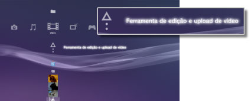
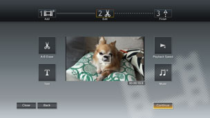

Vídeo > Editando o conteúdo de vídeo
Editando o conteúdo de vídeo
Você pode editar o conteúdo de vídeo salvo no armazenamento do sistema PS3™.
1. |
Selecione |
|---|---|
|
 |
|
2. |
Selecione |
3. |
Selecione |
4. |
Edite o vídeo. |
|
 |
|
5. |
Selecione [Concluir]. |
 (Vídeo) >
(Vídeo) >  (Criar novo vídeo).
(Criar novo vídeo). (Editar), você pode remover cenas específicas ou adicionar texto (ou caracteres). Siga as instruções na tela para completar a operação. Você pode visualizar o vídeo editado selecionando
(Editar), você pode remover cenas específicas ou adicionar texto (ou caracteres). Siga as instruções na tela para completar a operação. Você pode visualizar o vídeo editado selecionando  .
.Dicas
- Selecionando
 (Adicionar) na etapa 3, você pode continuar a adicionar itens de conteúdo e combiná-los em um arquivo de vídeo.
(Adicionar) na etapa 3, você pode continuar a adicionar itens de conteúdo e combiná-los em um arquivo de vídeo. - A duração máxima de reprodução para o conteúdo de vídeo editado é uma hora.
- Você pode adicionar até 16 itens de texto em uma tela e até 200 itens de texto em um arquivo de vídeo editado.
- Você pode utilizar apenas músicas predefinidas como música de fundo para seu vídeo. As músicas salvas no armazenamento do sistema PS3™ ou em outra mídia de armazenamento não podem ser utilizadas.
Tipos de arquivos que podem ser editados
Os seguintes tipos de arquivos podem ser editados em 
(Ferramenta de edição e upload de vídeo).
- Conteúdo de vídeo salvo no armazenamento do sistema a partir de uma mídia de armazenamento ou um dispositivo USB de armazenamento em massa (software de sistema versão 3.40 ou mais recente).
- Conteúdo de vídeo baixado para o armazenamento do sistema a partir de um
 (Navegador de Internet) (software de sistema versão 3.40 ou mais recente).
(Navegador de Internet) (software de sistema versão 3.40 ou mais recente).
Dicas
- Vídeos que foram salvos no armazenamento do sistema antes da atualização do software do sistema para
a versão 3.40, vídeos com proteção de direitos de autor e conteúdo definido com restrições de controle
parental não podem ser editados. - Cuidado para não infringir a propriedade intelectual de terceiros.